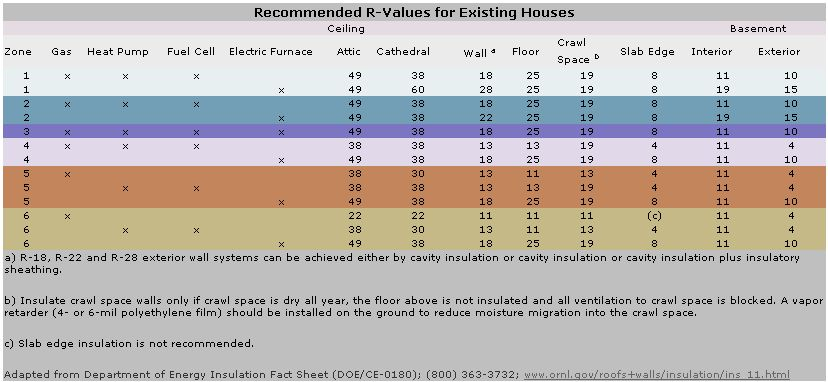

As summer winds down, probably the last thing on your mind is climbing into your attic and putting up more insulation.
But consider this: A well-insulated attic could slash your air conditioning bills throughout these warmer months in addition to reducing heating costs once winter rolls around.
“Adding additional cellulose insulation to an attic is often one of the most cost-effective strategies for improving the energy performance of a home,” says Alex Wilson, author of Your Green Home and president of BuildingGreen, a company that helps businesses improve the environmental performance of their buildings. “Not only will the added insulation reduce heating and air conditioning bills, but it will also improve comfort by helping to seal air leaks.”
Here are steps to get started on this money-saving project that’s relatively easy to do yourself.
1: Grab a yardstick or tape measure and make the ascent into your attic. Determine the R-value (the resistance to heat flow) of your current insulation by measuring its thickness in inches and multiplying that number by the R-value per inch for your type of insulation:
| Fiberglass blanket or batt | 3.2 |
| High-density fiberglass blanket or batts | 3.8 |
| Loose-fill fiberglass | 2.5 |
| Loose-fill rock wool | 2.8 |
| Loose-fill cellulose | 3.5 |
| Perlite or vermiculite | 2.7 |
| Expanded polystyrene board | 3.8 |
| Extruded polystyrene board | 4.8 |
| Polyisocyanurate board, unfaced | 5.9 |
| Polyisocyanurate board, foil-faced | 7.0 |
| Spray polyurethane foam | 5.9 |
For example, if you have loose-fill cellulose attic insulation that measures 10 inches thick, you have an R-value of about 35.
2: The amount of insulation you need in your attic depends on the climate of your region. Find your zone on the map in the Image Gallery, then use the chart below to find the R-value recommended by the U.S. Department of Energy (DOE). For more information, check out the DOE’s Insulation Fact Sheet.
Zone | Heat Source | Recommended R-value | |||
| Gas | Heat Pump | Fuel Cell | Electric Furnace | ||
| 1 | X | X | X | X | 49 |
| 2 | X | X | X | X | 49 |
| 3 | X | X | X | X | 49 |
| 4 | X | X | X | 38 | |
| 4 | X | X | 49 | ||
| 5 | X | X | X | 38 | |
| 5 | X | 49 | |||
| 6 | X | 22 | |||
| 6 | X | X | 38 | ||
| 6 | X | 49 | |||
3: Subtract the R-value of your current insulation from the recommended R-value to find out how much insulation you need to add.
So, continuing the example above, if you live in Zone 2 and heat with gas, subtract 35 (determined in step 1) from the recommended 49, which gives you 14. This means you need an additional R-14 in insulation, or 4 inches of loose-fill cellulose insulation (14 divided by 3.5 equals 4). For a 1,500-square-foot attic, adding an additional 4 inches of loose-fill cellulose insulation would cost about $250. Some home improvements stores offer free rental of an insulation blower with the purchase of a certain amount of insulation.
It’s important to note that you don't have to add the same type of insulation that’s already installed in your attic, so consider choosing a greener insulation option. (You would need to recalculate the amount of additional insulation you need from step 3 using the R-value per inch for your desired type of insulation.)
For information on the different types of insulation, including costs, environmental impact, advantages and disadvantages, check out All About Insulation. For a step-by-step guide to installing your insulation, visit Owens Corning’s attic insulation page.
Have you added insulation to your attic and enjoyed lower energy bills? Share your know-how by posting a comment below.
|
RAYBDBOMB/FLICKR Adding insulation to your attic can make your home more comfortable and energy-efficient year-round. |
U.S. DEPARTMENT OF ENERGY To find out how much insulation your home needs, first find your region on the map and note the Zone number. Then check the chart in the article to see the recommended R-value of insulation for your attic. Also check the next image in this Image Gallery - it lists the recommended R-values for walls, crawl spaces, basements and more. |
 U.S. DEPARTMENT OF ENERGY To find out how much insulation different sections of your home needs, first find your region on the map in the previous image in this Image Gallery and note the Zone number. Then look up your Zone and the different sections of your home in the chart above. |